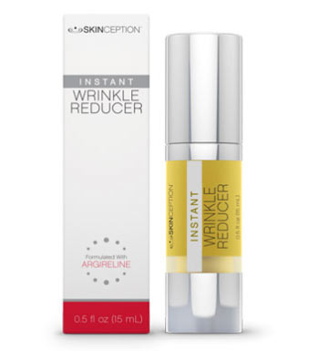

Shark Tank Wrinkle Reducer
Have you been scammed by a free trial for shark tank wrinkle reducer anti aging cream?
How Shark Tank Wrinkle Reducer Free Trials Lure You In
You know the ads with the captivating headlines that read, “Dr. Oz says this is a miracle cream”, or “Katie Couric’s secret”, or “Don’t tell Cover girl”. The latest scam is from Shark Tank. There are made up stories about women that have discovered accidentally a miracle breakthrough in anti aging wrinkle reducer.
It captivates us because let’s face it, who wouldn’t want to discover a miracle cream to stop the aging process overnight?
What’s unfortunate is the dark, deceptive side to these types of offers that most people don’t even realize until it’s too late. They will eventually notice large, monthly recurring charges to their bank statement or credit card, which leaves them feeling frustrated and definitely scammed.
The best is defense to this is to educate yourself on how free trial offers work. Then you won’t be taken to the bank for hundreds of dollars you didn’t intend to spend.
There is good news to finding a different Shark Tank wrinkle reducer that actually works and has been successfully proven to provide the best wrinkle reducing capabilities and that is Instant Wrinkle Reducer from SkinCeption.
So, can this topical anti aging wrinkle reducer from SkinCeption really reduce crows feet, fine lines and wrinkles? The company claims you can actually watch wrinkles and fine lines disappear right before your very eyes.
This is a look younger right now product; you no longer need to wait over a period of time to see the wrinkles and fine lines go away gradually. Also they claim to get rid of wrinkles for a period up to eight hours. No need for a prescription. You can order it online at the official website and pay the lowest price.
Instant Wrinkle Reducer is a topical cream requiring no needles, pain or doctors. It is referred to as Botox in a bottle. People are always looking for instant gratification and this product can deliver. Who really wants the risk of needles injected to their face not to mention the pain?
Because of its two powerful and safe ingredients it can instantly get rid of wrinkles making your skin look resilient and youthful.
Ingredients of Instant Wrinkle Reducer
The powerful two key ingredients are Hyaluronic acid and Argireline. They work together as the Argireline helps prevent your facial muscles from contracting while the Hyaluronic acid binds to water helping the skin to restore elastin and collagen. These are the skin proteins that are found in younger skin giving skin a more resilient look.
Argireline – Is a peptide that works similar to Botox but its effects are shorter. The effects may be very similar to Botox, but less invasive and much less risk. Clinical trials show that this peptide has a highly efficient effect on wrinkles.
It’s really the best needle free option for anti wrinkles, according to Dr. Oz. Argireline is only used in the best anti wrinkle serums and creams. It can also be used for diminish crow’s feet.
Hyaluronic Acid – No need to worry about the word acid. This ingredient is not harmful or acidic. It actually is in our bodies naturally and begins to diminish as we age. It appends to water in the skin keeping it hydrated to increase retention of moisture. This allows the skin to appear youthful and plump. This ingredient is already in cartilage, skin and other parts of the body.
As we age it decreases which allows wrinkles to begin to appear. Studies have shown that hyaluronic acid for skin care increases moisture, firmness, elasticity and works as an anti oxidant slowing down cellular aging of the skin.
How Long Does Instant Wrinkle Reducer Last?
The results are instant; however, they are not permanent. The results you see immediately can lasts up to 8 hours. Some of the other ingredients can prevent wrinkles and fine lines from developing further. Botox results are not permanent either.
Side Effect of Instant Wrinkle Reducer
After some studies were performed, the ingredients found in Instant Wrinkle Reducer show they are safe with no harmful side effects. It went on further to show that it is a much safer alternative to Botox (BoNTs).
If you have any conditions or health concerns, it is best if you go over the product with your doctor to be completely sure in using this product.
SkinCeption Company
This company is known for specializing in skin care product that contains no toxic or harsh chemicals. Their product contain only natural plant based compounds. They have an excellent reputation making an exclusive of skin care products such as Dermefface FX7 scar removal gel, Kollagen Intensiv and many others.
They manufacture in the US and all the testing is done in a government and FDA approved public lab. Their customer service is live 7 days a week. They also provide a no risk 90 day money back guarantee if you are not happy with the products.
Protecting your skin is a given. Right now you can reverse the signs of aging and feel really good about how you look.
When you feel and look good your self-image and confidence will improve. Your skin will be firmer, healthier and younger looking. Don’t let your skepticism stop you from giving Instant Wrinkle Reducer a try.
Your reality doesn’t have to be lined, wrinkled skin. Wrinkle Reducer will deliver as promised. But remember, if you are not 100% satisfied take advantage of the 100% 90 day money back guarantee, no questions asked.
Defy Your Age INSTANTLY:
- Younger looking skin
- Diminish fine lines and wrinkles
- Best results without doctor visits or needles
- More radiant skin
<<< IMAGE GOES HERE FOR BEFORE / AFTER >>>
Pros and Cons of Skinception Instant Wrinkle Reducer
Pros:
- Instant results
- No needles or pain
- Priced affordable
- Simple to use
- Same results as Botox without the risk
- 90 day money back guarantee
- Last up to eight hours
Cons:
- Not permanent results
- All ingredients are not listed
- Mass produced store brands are less expensive
Purchase Instant Wrinkle Reducer – CLICK HERE
You will not find this product in pharmacies or local stores. You can only purchase it online. Order with complete confidence from the official website of SkinCeption.
Purchasing from the official website will afford you the best prices, no middleman and get the 90 day money back guarantee.
Also, the more you order, the more you save. Ready to look instantly younger? Visit the SkinCeption official website today!